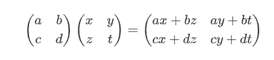
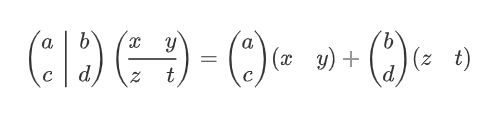
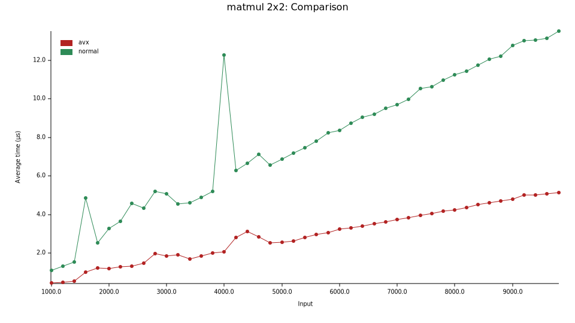
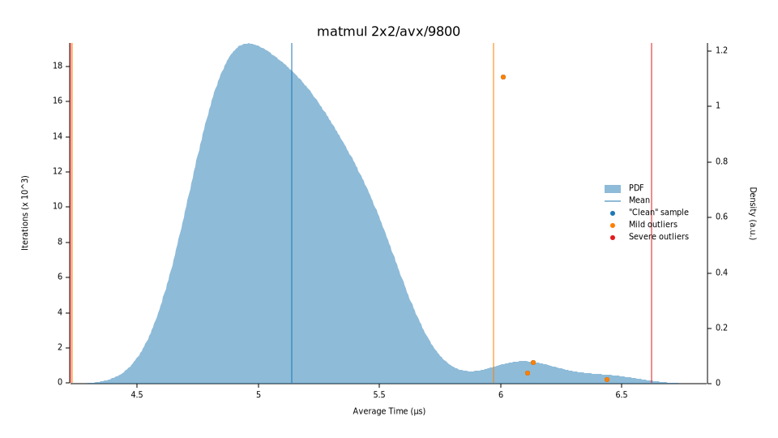
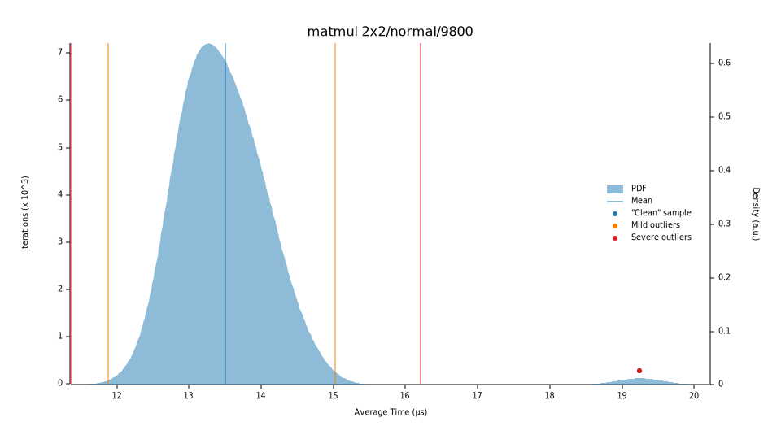
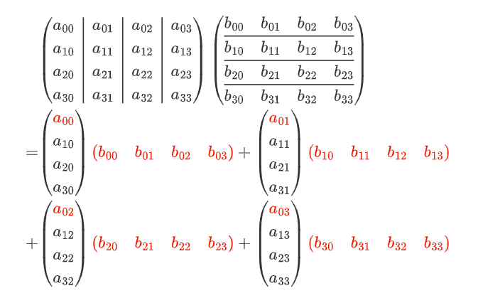
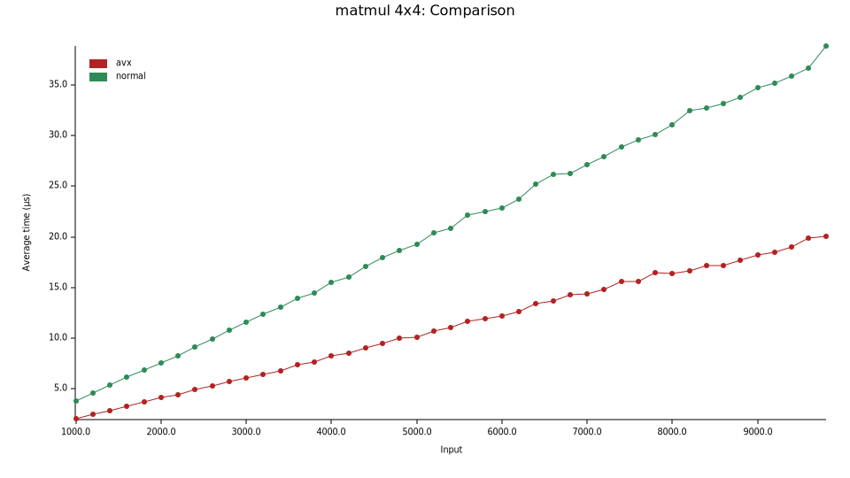
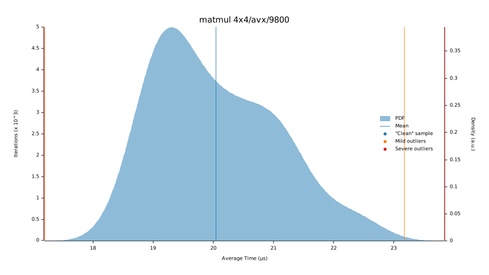
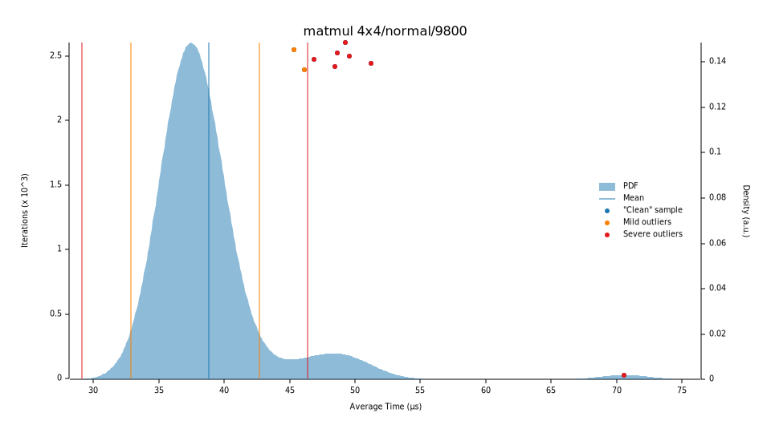

矩阵乘法
矩阵运算是SIMD最容易想到的应用，这里实现一下2x2和4x4的矩阵乘法，小试牛刀。
2x2矩阵
在这里2x2矩阵用4个双精度浮点数来表示，可以直接用__m256d来表示——低位两个分量为第一行，高位两个分量是第二行。

就相当于：
┌───────────────┬───────────────┬───────────────┬───────────────┐
│ d │ c │ b │ a │
└───────────────┴───────────────┴───────────────┴───────────────┘
*
┌───────────────┬───────────────┬───────────────┬───────────────┐
│ t │ z │ y │ x │
└───────────────┴───────────────┴───────────────┴───────────────┘
=
┌───────────────┬───────────────┬───────────────┬───────────────┐
│ c*x+d*t │ c*x+d*z │ a*y+b*t │ a*x+b*z │
└───────────────┴───────────────┴───────────────┴───────────────┘
其实我没找到最优的用SIMD实现2x2矩阵的方法，不过我觉得我自己实现的方法还是挺直观的。
- 从
[[a, b], [c, d]]得到[[a, a], [c, c]]和[[b, b], [d, d]]（把列各复制一份） - 从
[[x, y], [z, t]]得到[[x, y], [x, y]]和[[z, t], [z, t]]（把行各复制一份） - 把
[[a, a], [c, c]]与[[x, y], [x, y]]对应分量相乘得到[[a*x, a*y], [c*x, c*y]] - 把
[[b, b], [d, d]]与[[z, t], [z, t]]对应分量相乘得到[[b*z, b*t], [d*z, d*t]] - 然后把3和4的结果加起来。
其实这就是矩阵分块再相乘：

代码写起来就是：
#![allow(unused)] fn main() { #[derive(Clone, Copy)] #[repr(transparent)] pub struct Matrix2x2(__m256d); impl Mul for Matrix2x2 { type Output = Self; #[inline(always)] fn mul(self, rhs: Self) -> Self::Output { unsafe { // [[a, b], [c, d]] -> [[a, a], [c, c]] let a_row1_dup = _mm256_permute4x64_pd::<0xA0>(self.0); // [[a, b], [c, d]] -> [[b, b], [d, d]] let a_row2_dup = _mm256_permute4x64_pd::<0xF5>(self.0); // [[x, y], [z, t]] -> [[x, y], [x, y]] let b_col1_dup = _mm256_permute4x64_pd::<0x44>(rhs.0); // [[x, y], [z, t]] -> [[z, t], [z, t]] let b_col2_dup = _mm256_permute4x64_pd::<0xEE>(rhs.0); let mut res = _mm256_mul_pd(a_row2_dup, b_col2_dup); // 这里用fmadd把3/5步骤合并 res = _mm256_fmadd_pd(a_row1_dup, b_col1_dup, res); Self(res) } } } }
做了个bench，处理器是11th Gen Intel(R) Core(TM) i7-1185G7 @ 3.00GHz
-
500~4900次矩阵乘法（忘记是左闭右开区间，就没做5000次乘法的测试），SIMD与普通的乘法比较（平均时间）

-
4900次矩阵乘法多次采样，SIMD的矩阵乘法平均时间为5.1721µs，普通矩阵乘法平均为13.463 µs


4x4矩阵
我们用__m256d表示4x4矩阵的一行，用[__m256d; 4]表示一个4x4矩阵。同样用分块矩阵的方式看一下4x4矩阵的乘法，关注第一行是怎么得出来的：

这一行换成代码来表达就是：
#![allow(unused)] fn main() { // c0 = [a00, a00, a00, a00] * [b00, b01, b02, b03] let mut c0 = _mm256_mul_pd(_mm256_broadcast_sd(&a[0][0]), b[0]); // + [a01, a01, a01, a01] * [b10, b11, b12, b13] c0 = _mm256_fmadd_pd(_mm256_broadcast_sd(&a[0][1]), b[1], c0); // + [a02, a02, a02, a02] * [b20, b21, b22, b23] c0 = _mm256_fmadd_pd(_mm256_broadcast_sd(&a[0][2]), b[2], c0); // + [a03, a03, a03, a03] * [b30, b31, b32, b33] c0 = _mm256_fmadd_pd(_mm256_broadcast_sd(&a[0][3]), b[3], c0); }
然后其他几行照着写就OK。不过我也还是不太清楚SIMD写4x4矩阵最佳写法是啥。
同样做一下bench，处理器是11th Gen Intel(R) Core(TM) i7-1185G7 @ 3.00GHz
-
500~4900次矩阵乘法，SIMD与普通的乘法比较（平均时间）——可以看到其实4x4矩阵其实没有2x2矩阵加速效果明显的

-
4900次矩阵乘法多次采样，SIMD的矩阵乘法平均时间为19.751 µs，普通矩阵乘法平均为39.845 µs

